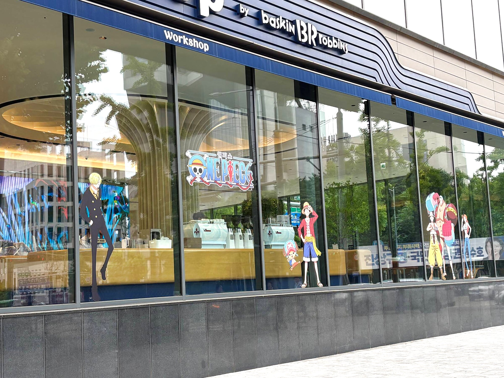
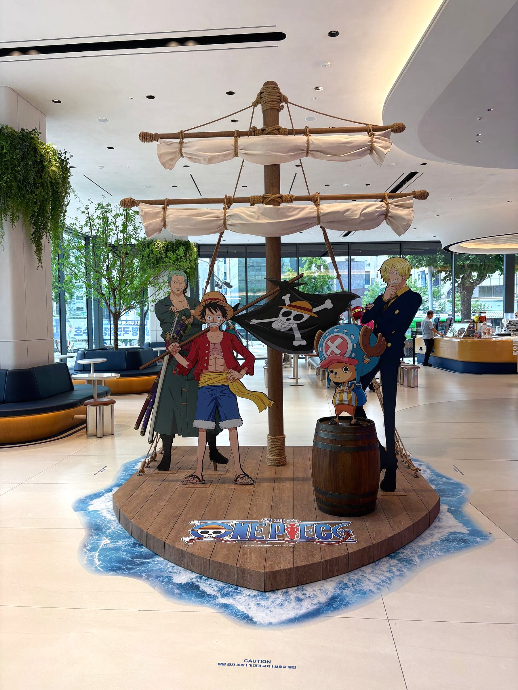
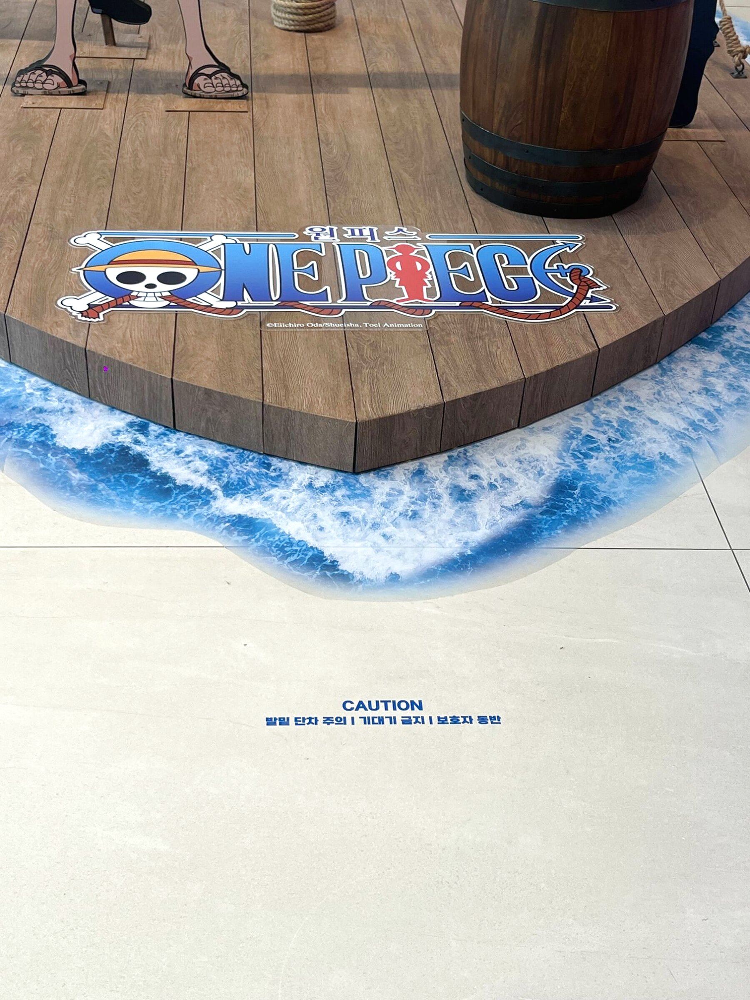
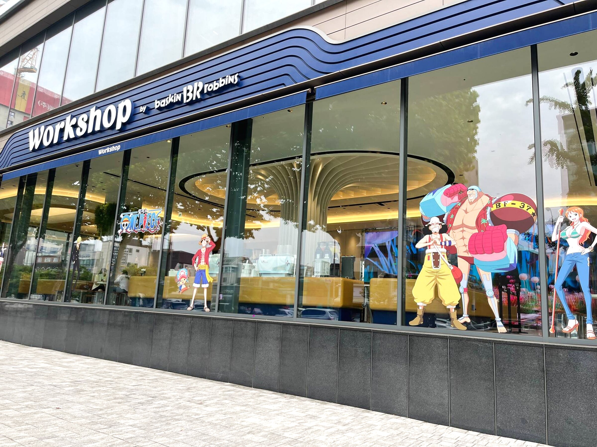

Adventure · July campaign plan어드벤처 · 7월 캠페인 기획안
Baskin‑Robbins
× One Piece배스킨라빈스
× 원피스
April 2026 · Baskin-Robbins Korea2026.4 · 배스킨라빈스 코리아
Baskin-Robbins Korea × One Piece
Campaign plan · July 2026캠페인 기획안 · 2026년 7월
One Piece is a voyage to find the legendary treasure. Baskin-Robbins is 31 flavours to explore. Put them together and the campaign writes itself: set sail to find your own One Pick.원피스는 전설의 보물을 찾아 떠나는 항해, 배스킨라빈스는 31가지 맛을 탐험하는 즐거움. 둘을 합치면 캠페인이 됩니다. 수많은 맛 중 나만의 ‘원픽’을 찾아 떠나는 모험.
Background배경
The biggest story
still being written.아직도 끝나지 않은
가장 큰 이야기.
- 500M+copies sold worldwide, a Guinness world record전 세계 누적 발행부수, 기네스 세계 기록
- #1best-selling manga series in Korea국내 단행본 종합 베스트셀러 1위
- 71%more new digital customers for Lush Korea, sold out on launch day러쉬 코리아 신규 디지털 고객 증가, 출시 당일 완판
- +25%year-on-year sales at Everland, 100K visitors in two weeks에버랜드 전년 대비 매출 증가, 2주간 10만 명


The catch인사이트
But the fans are
mostly men in their 30s.하지만 팬덤은
3040 남성에 몰려 있다.
Book-buyer data showed the gap: men in their 30s are 27.5% of buyers, and age ratings keep the anime away from kids. Baskin-Robbins’ customers are families, women and teens. So the plan leads with the adventure and the flavours, and gives cute characters like Chopper a bigger role.구매 데이터가 간극을 보여줬습니다. 30대 남성이 27.5%, 애니·영화는 12·15세 시청 제한. 배스킨라빈스의 고객은 가족, 여성, 10대입니다. 그래서 ‘모험’과 ‘맛’을 앞에 세우고, 쵸파 같은 귀여운 캐릭터의 비중을 키웠습니다.
“Ready to set sail
for a new flavour?”“새로운 맛을
모험해볼텐가?”

The theme테마
Voyage meets
exploration.항해와 탐험이
만나다.
One Piece is a voyage for a legendary treasure; Baskin-Robbins is the fun of exploring 31 flavours. The theme: find your One Pick. Luffy leads, Zoro and Chopper carry the new flavours, and the fans’ own toolkit (the Devil Fruit, wanted posters, the straw hat, the Jolly Roger) dresses every product.원피스는 전설의 보물을 찾는 위대한 항로, 배스킨라빈스는 31가지 맛 중 나만의 맛을 찾는 즐거움. 테마는 ‘최애 맛, 원픽을 찾는 모험’. 메인은 루피, 신규 맛은 조로와 쵸파가 맡고, 악마의 열매·현상수배서·밀짚모자·해적기 같은 팬덤의 모티브가 모든 제품을 입힙니다.


Products제품
A fruit you can’t name,
a mint you can’t stop.정체를 알 수 없는 열매,
멈출 수 없는 민트.
Luffy’s Gomu Gomu Devil Fruit flavour, Zoro’s triple-sword crunch mint and Chopper’s cotton-candy scoop; then cakes built on the motifs, character blasts and dessert sandwiches.루피의 고무고무 열매 아이스크림, 조로의 삼도류 크런치 민트, 쵸파의 솜사탕 아이스크림. 이어서 모티브를 쓴 케이크, 캐릭터 블라스트, 디저트 샌드.
Flavour of the monthFOM / 아이스크림


Ice cream cakes아이스크림 케이크


Beverage & dessert음료 & 디저트


Packaging & goods패키지 · 굿즈
Packaging you collect,
goods for the holidays.모으고 싶은 패키지,
바캉스를 노린 굿즈.
Packaging패키지


Goods굿즈


Content & promotion콘텐츠·프로모션
Tease it, play it,
get your bounty.궁금하게, 참여하게,
현상금을 걸게.
A teaser where the BR logo puts on the straw hat; a ‘what’s my bounty’ web experience that turns your photo into a wanted poster; a Devil Fruit type test; and a stamp map across July.밀짚모자를 쓴 BR 로고 티저, 내 사진으로 현상수배서를 만드는 ‘나의 현상금 측정기’, 악마의 열매 유형 테스트, 7월 한 달 스탬프 어드벤처 맵.


The store매장
Set sail
at Workshop.워크샵에서
출항.
The Workshop flagship became the Thousand Sunny’s deck: a 3.25 m mast with real sails and rope rigging on a 2.3 × 2.85 m wooden bow, life-size Luffy, Zoro and Sanji cut-outs, Chopper up in the yard, and a sea-wave floor sheet that makes the whole thing a photo spot. Crew window graphics carry the voyage out to the street.워크샵 매장을 써니호의 갑판으로 만들었습니다. 높이 3.25m 돛대에 실제 돛과 밧줄 리깅, 2.3 × 2.85m 원목 뱃머리, 실물 크기 루피·조로·상디 등신대와 활대 위의 쵸파, 그리고 바다 물결 바닥 시트로 매장 전체를 포토 스팟으로. 창문의 크루 그래픽이 모험을 거리까지 이어 줍니다.
As built: Workshop실제 매장 · 워크샵




All aboard총집합
Every flavour, cake, cup
and keepsake, set sail.맛, 케이크, 컵, 굿즈까지
한 번에 출항.
Everything we planned for July in one frame: three flavours, four cakes, two blasts, two dessert sandwiches, the cups, packs, bags and goods.7월을 위해 기획한 모든 것을 한 화면에. 플레이버 3종, 케이크 4종, 블라스트 2종, 디저트 샌드 2종, 그리고 컵·팩·쇼핑백·굿즈.
One Piece © Eiichiro Oda / Shueisha, Toei Animation. Shown as client work for Baskin-Robbins Korea, from the April 2026 campaign plan for July 2026; plan items may differ from what launched. Research slides keep the sources cited in the plan; third-party images belong to their owners. The key visual animation was made with a generative tool (Higgsfield).원피스 © 오다 에이이치로 / 슈에이샤, 토에이 애니메이션. 배스킨라빈스 코리아 클라이언트 작업으로, 2026년 7월 캠페인을 위한 4월 기획안에서 발췌했습니다. 기획 단계 항목은 실제 출시와 다를 수 있습니다. 리서치 슬라이드는 기획안에 표기된 출처를 따르며, 타사 이미지는 각 권리자에게 있습니다. 키비주얼 애니메이션은 생성형 도구(Higgsfield)로 만들었습니다.